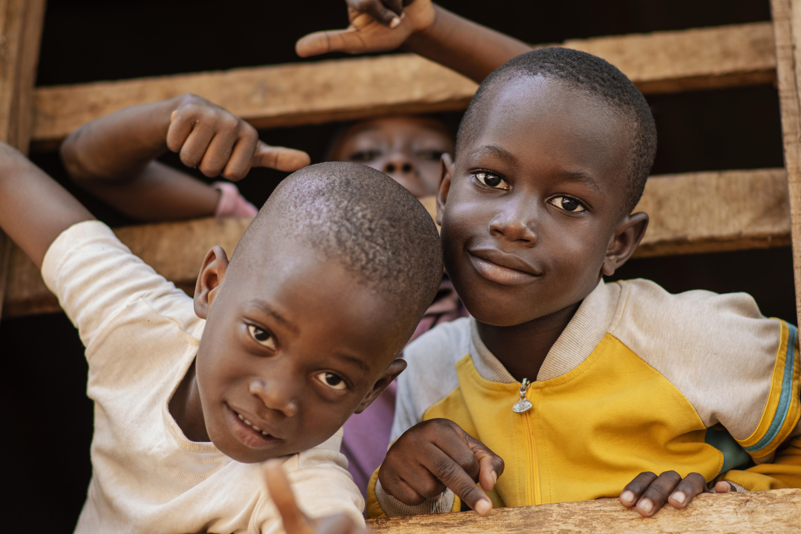
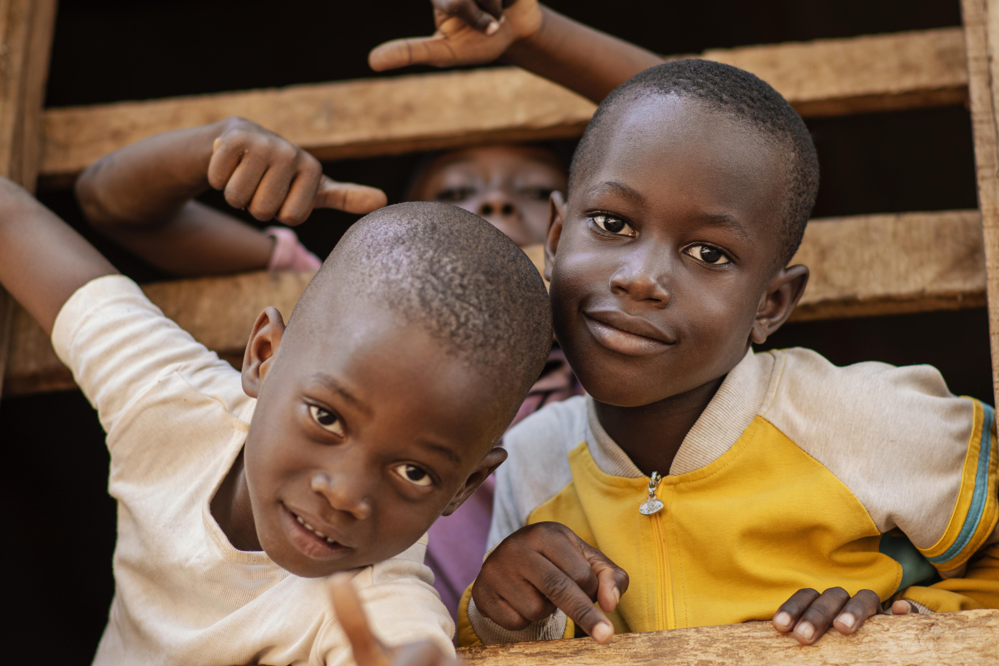

Current projects
Gaza: Urgent Relief for a Trapped Population After over 19 months
of intense conflict between Israel and Hamas, the humanitarian
situation in Gaza is dire. More than 54,000 people have lost their
lives, and over 124,000 have been injured. The UN now calls Gaza "the
most hunger-stricken region on Earth." Public Relief supports several
vetted organizations delivering critical, non-partisan aid: Doctors
Without Borders (MSF): Operating field hospitals and mobile clinics
that provide surgical care, maternal health services, child
healthcare, and mental health support.
Sudan: Local Heroes in a Forgotten War Since April 2023, Sudan has been torn apart
by a brutal civil war between government forces and paramilitary
groups. While the crisis has received limited media attention, its
human toll is staggering. Millions have been displaced, and the
healthcare and food systems have collapsed. We support Emergency
Response Rooms (ERRs) — grassroots volunteer networks born out of the
2019 revolution, now providing vital aid in cities and towns across
Sudan.
Ukraine: Recovery and Relief in a War Zone. Two years into the war, Ukraine continues to face
widespread devastation — from destroyed hospitals and homes to deeply
traumatized communities. Public Relief is proud to support the
country's humanitarian and recovery efforts. We fund initiatives
through: United24: Ukraine’s official fundraising platform supporting
the reconstruction of bridges, schools, and hospitals, and equipping
ambulances and trauma care units.

 
